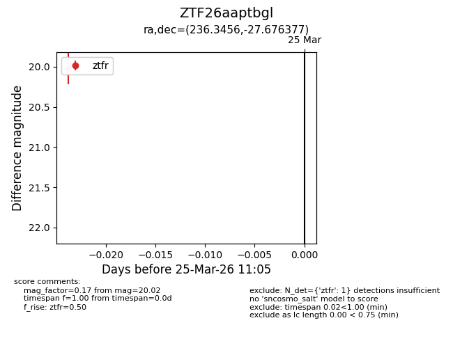
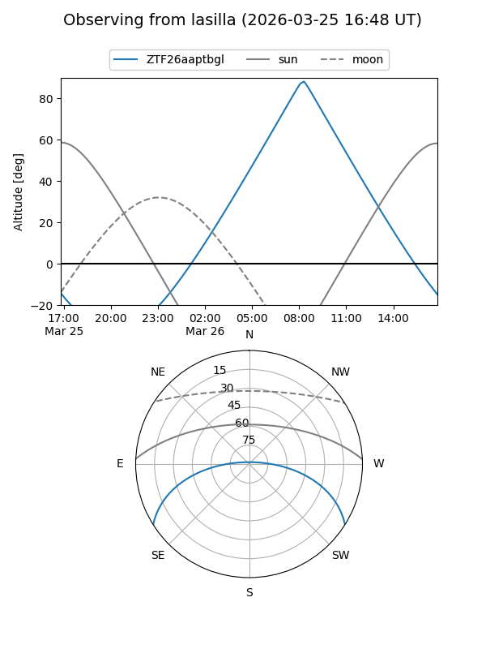
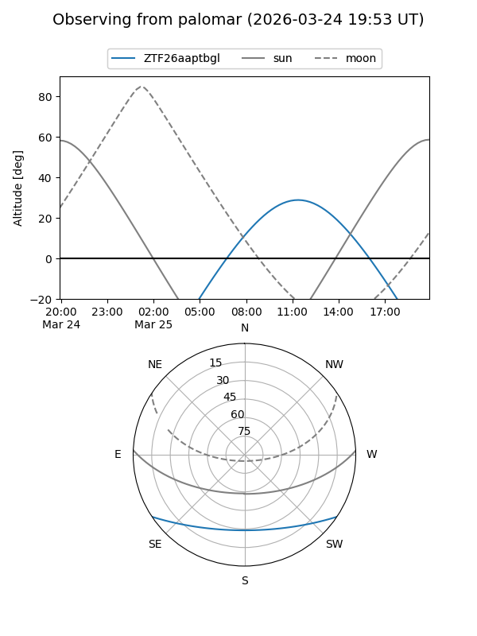
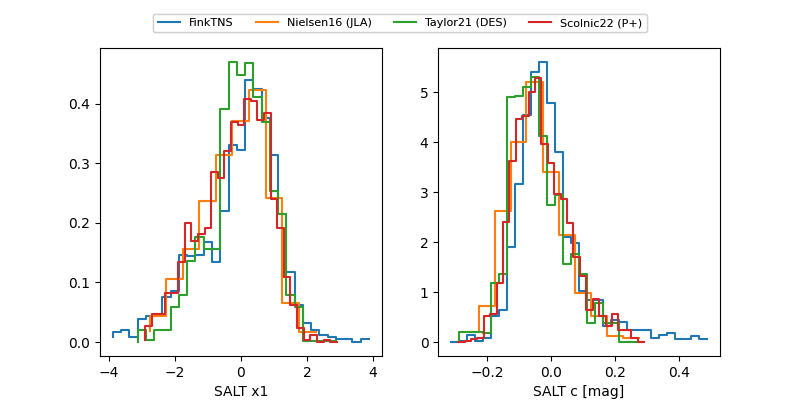

ZTF26aaptbgl
Target ZTF26aaptbgl at 2026-03-25 11:08
Aliases and brokers:
FINK: link
Lasair: link
ALeRCE: link
alt names
ZTF26aaptbgl (ztf,fink_ztf)
Coordinates:
equatorial (ra, dec) = 236.3456,-27.67638
equatorial (HMS+DMS) = 15:45:22.95,-27:40:34.96
galactic (l, b) = (343.7192,+21.10316)
Flags:
Photometry:
last ztfr=20.02
1 ztfr detections
Lightcurve

Visibility


Additional plots
